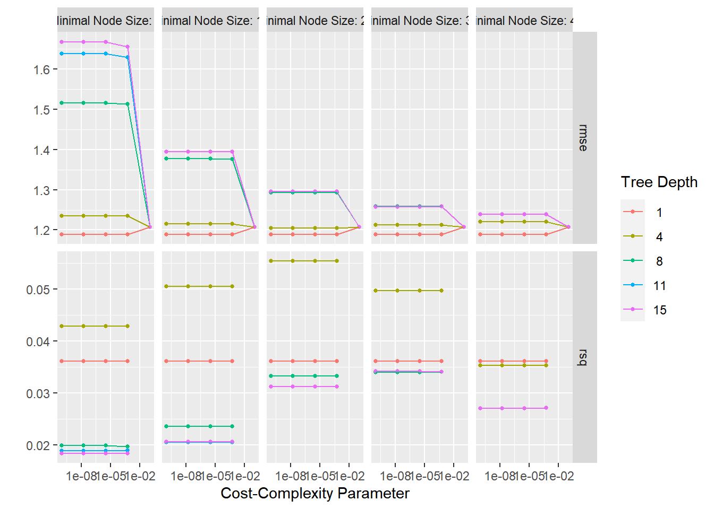
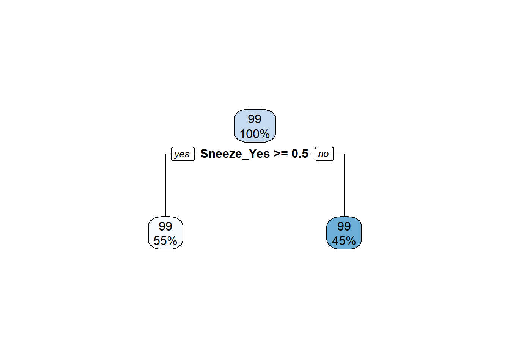
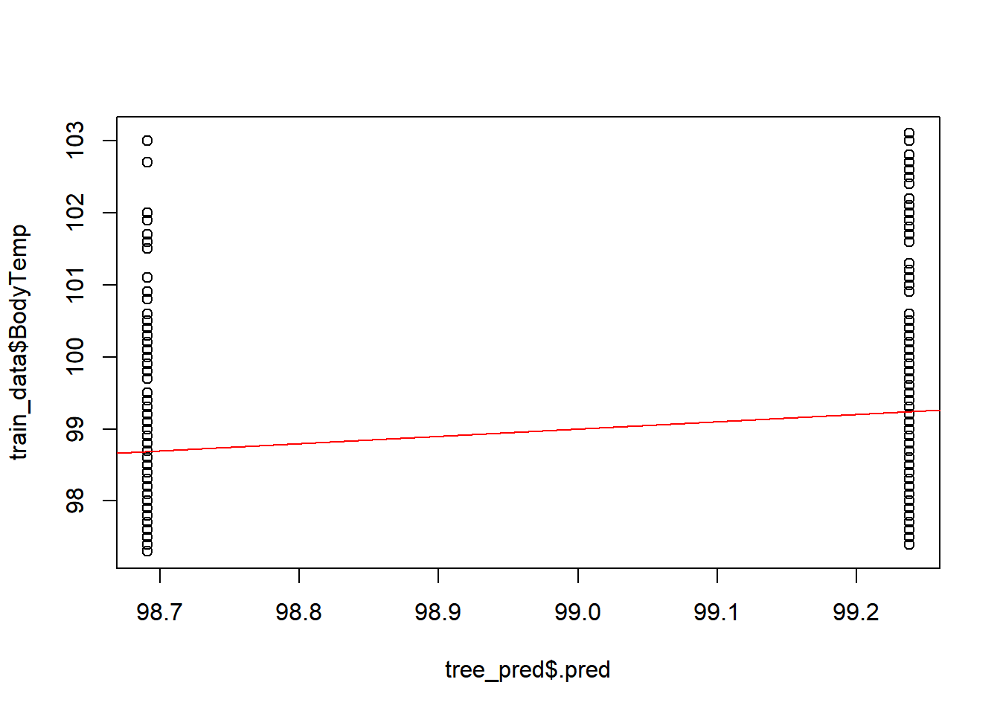
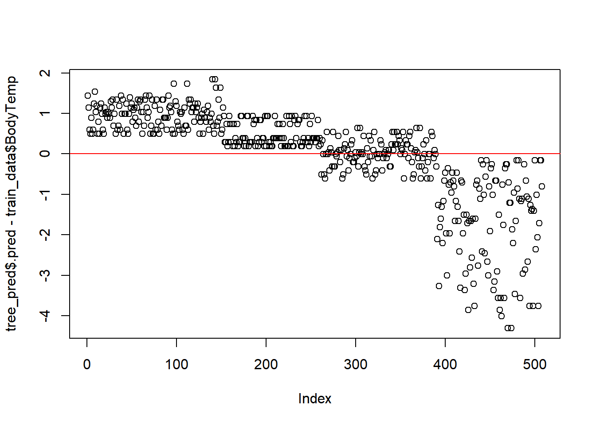
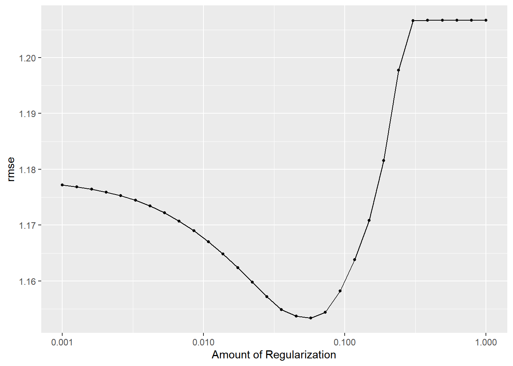
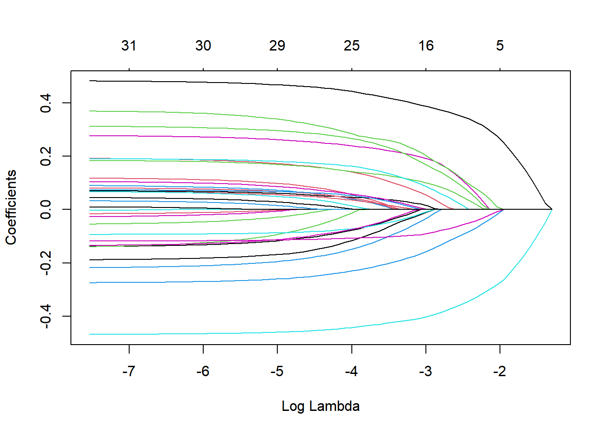

TidyModel Framework.Basic process:
NOTE: Original code for exercise was divided into separate scripts in respective repo.
## OBJECTIVE
Loading all the default settings and preliminary programs.
Path to Processed Data and loading of cleaned data
data_location <- here::here("data","processed_data","processeddata.rds")
data<- readRDS(data_location)Reminder: Outcome of interest is Body Temp; Categorical outcome is Nausea; Predictor= RunnyNose
glimpse(data)## Rows: 730
## Columns: 32
## $ SwollenLymphNodes <fct> Yes, Yes, Yes, Yes, Yes, No, No, No, Yes, No, Yes, Y~
## $ ChestCongestion <fct> No, Yes, Yes, Yes, No, No, No, Yes, Yes, Yes, Yes, Y~
## $ ChillsSweats <fct> No, No, Yes, Yes, Yes, Yes, Yes, Yes, Yes, No, Yes, ~
## $ NasalCongestion <fct> No, Yes, Yes, Yes, No, No, No, Yes, Yes, Yes, Yes, Y~
## $ CoughYN <fct> Yes, Yes, No, Yes, No, Yes, Yes, Yes, Yes, Yes, No, ~
## $ Sneeze <fct> No, No, Yes, Yes, No, Yes, No, Yes, No, No, No, No, ~
## $ Fatigue <fct> Yes, Yes, Yes, Yes, Yes, Yes, Yes, Yes, Yes, Yes, Ye~
## $ SubjectiveFever <fct> Yes, Yes, Yes, Yes, Yes, Yes, Yes, Yes, Yes, No, Yes~
## $ Headache <fct> Yes, Yes, Yes, Yes, Yes, Yes, No, Yes, Yes, Yes, Yes~
## $ Weakness <fct> Mild, Severe, Severe, Severe, Moderate, Moderate, Mi~
## $ WeaknessYN <fct> Yes, Yes, Yes, Yes, Yes, Yes, Yes, Yes, Yes, Yes, Ye~
## $ CoughIntensity <fct> Severe, Severe, Mild, Moderate, None, Moderate, Seve~
## $ CoughYN2 <fct> Yes, Yes, Yes, Yes, No, Yes, Yes, Yes, Yes, Yes, Yes~
## $ Myalgia <fct> Mild, Severe, Severe, Severe, Mild, Moderate, Mild, ~
## $ MyalgiaYN <fct> Yes, Yes, Yes, Yes, Yes, Yes, Yes, Yes, Yes, Yes, Ye~
## $ RunnyNose <fct> No, No, Yes, Yes, No, No, Yes, Yes, Yes, Yes, No, No~
## $ AbPain <fct> No, No, Yes, No, No, No, No, No, No, No, Yes, Yes, N~
## $ ChestPain <fct> No, No, Yes, No, No, Yes, Yes, No, No, No, No, Yes, ~
## $ Diarrhea <fct> No, No, No, No, No, Yes, No, No, No, No, No, No, No,~
## $ EyePn <fct> No, No, No, No, Yes, No, No, No, No, No, Yes, No, Ye~
## $ Insomnia <fct> No, No, Yes, Yes, Yes, No, No, Yes, Yes, Yes, Yes, Y~
## $ ItchyEye <fct> No, No, No, No, No, No, No, No, No, No, No, No, Yes,~
## $ Nausea <fct> No, No, Yes, Yes, Yes, Yes, No, No, Yes, Yes, Yes, Y~
## $ EarPn <fct> No, Yes, No, Yes, No, No, No, No, No, No, No, Yes, Y~
## $ Hearing <fct> No, Yes, No, No, No, No, No, No, No, No, No, No, No,~
## $ Pharyngitis <fct> Yes, Yes, Yes, Yes, Yes, Yes, Yes, No, No, No, Yes, ~
## $ Breathless <fct> No, No, Yes, No, No, Yes, No, No, No, Yes, No, Yes, ~
## $ ToothPn <fct> No, No, Yes, No, No, No, No, No, Yes, No, No, Yes, N~
## $ Vision <fct> No, No, No, No, No, No, No, No, No, No, No, No, No, ~
## $ Vomit <fct> No, No, No, No, No, No, Yes, No, No, No, Yes, Yes, N~
## $ Wheeze <fct> No, No, No, Yes, No, Yes, No, No, No, No, No, Yes, N~
## $ BodyTemp <dbl> 98.3, 100.4, 100.8, 98.8, 100.5, 98.4, 102.5, 98.4, ~Feature / Variable removal
OrderedData<-data%>%
#remove YN variables for those variables with severity factors
select(-WeaknessYN,-CoughYN,-MyalgiaYN,-CoughYN2)%>%
#code symptom severity factors as ordinal
mutate(Weakness=as.ordered(Weakness), CoughIntensity=as.ordered(CoughIntensity), Myalgia=as.ordered(Myalgia))%>%
#Order severity in ordered factors: None<mild<Moderate<Severee
mutate_at(vars(Weakness, CoughIntensity, Myalgia),
list(~factor(.,levels = c("None","Mild","Moderate","Severe"),ordered = TRUE)))
summary(OrderedData)## SwollenLymphNodes ChestCongestion ChillsSweats NasalCongestion Sneeze
## No :418 No :323 No :130 No :167 No :339
## Yes:312 Yes:407 Yes:600 Yes:563 Yes:391
##
##
##
##
## Fatigue SubjectiveFever Headache Weakness CoughIntensity
## No : 64 No :230 No :115 None : 49 None : 47
## Yes:666 Yes:500 Yes:615 Mild :223 Mild :154
## Moderate:338 Moderate:357
## Severe :120 Severe :172
##
##
## Myalgia RunnyNose AbPain ChestPain Diarrhea EyePn Insomnia
## None : 79 No :211 No :639 No :497 No :631 No :617 No :315
## Mild :213 Yes:519 Yes: 91 Yes:233 Yes: 99 Yes:113 Yes:415
## Moderate:325
## Severe :113
##
##
## ItchyEye Nausea EarPn Hearing Pharyngitis Breathless ToothPn
## No :551 No :475 No :568 No :700 No :119 No :436 No :565
## Yes:179 Yes:255 Yes:162 Yes: 30 Yes:611 Yes:294 Yes:165
##
##
##
##
## Vision Vomit Wheeze BodyTemp
## No :711 No :652 No :510 Min. : 97.20
## Yes: 19 Yes: 78 Yes:220 1st Qu.: 98.20
## Median : 98.50
## Mean : 98.94
## 3rd Qu.: 99.30
## Max. :103.10Low variance predictors view summary of Ordered Data <50 entries
Mod11Data<-OrderedData%>%
select(-Hearing, -Vision)
glimpse(Mod11Data) ## Rows: 730
## Columns: 26
## $ SwollenLymphNodes <fct> Yes, Yes, Yes, Yes, Yes, No, No, No, Yes, No, Yes, Y~
## $ ChestCongestion <fct> No, Yes, Yes, Yes, No, No, No, Yes, Yes, Yes, Yes, Y~
## $ ChillsSweats <fct> No, No, Yes, Yes, Yes, Yes, Yes, Yes, Yes, No, Yes, ~
## $ NasalCongestion <fct> No, Yes, Yes, Yes, No, No, No, Yes, Yes, Yes, Yes, Y~
## $ Sneeze <fct> No, No, Yes, Yes, No, Yes, No, Yes, No, No, No, No, ~
## $ Fatigue <fct> Yes, Yes, Yes, Yes, Yes, Yes, Yes, Yes, Yes, Yes, Ye~
## $ SubjectiveFever <fct> Yes, Yes, Yes, Yes, Yes, Yes, Yes, Yes, Yes, No, Yes~
## $ Headache <fct> Yes, Yes, Yes, Yes, Yes, Yes, No, Yes, Yes, Yes, Yes~
## $ Weakness <ord> Mild, Severe, Severe, Severe, Moderate, Moderate, Mi~
## $ CoughIntensity <ord> Severe, Severe, Mild, Moderate, None, Moderate, Seve~
## $ Myalgia <ord> Mild, Severe, Severe, Severe, Mild, Moderate, Mild, ~
## $ RunnyNose <fct> No, No, Yes, Yes, No, No, Yes, Yes, Yes, Yes, No, No~
## $ AbPain <fct> No, No, Yes, No, No, No, No, No, No, No, Yes, Yes, N~
## $ ChestPain <fct> No, No, Yes, No, No, Yes, Yes, No, No, No, No, Yes, ~
## $ Diarrhea <fct> No, No, No, No, No, Yes, No, No, No, No, No, No, No,~
## $ EyePn <fct> No, No, No, No, Yes, No, No, No, No, No, Yes, No, Ye~
## $ Insomnia <fct> No, No, Yes, Yes, Yes, No, No, Yes, Yes, Yes, Yes, Y~
## $ ItchyEye <fct> No, No, No, No, No, No, No, No, No, No, No, No, Yes,~
## $ Nausea <fct> No, No, Yes, Yes, Yes, Yes, No, No, Yes, Yes, Yes, Y~
## $ EarPn <fct> No, Yes, No, Yes, No, No, No, No, No, No, No, Yes, Y~
## $ Pharyngitis <fct> Yes, Yes, Yes, Yes, Yes, Yes, Yes, No, No, No, Yes, ~
## $ Breathless <fct> No, No, Yes, No, No, Yes, No, No, No, Yes, No, Yes, ~
## $ ToothPn <fct> No, No, Yes, No, No, No, No, No, Yes, No, No, Yes, N~
## $ Vomit <fct> No, No, No, No, No, No, Yes, No, No, No, Yes, Yes, N~
## $ Wheeze <fct> No, No, No, Yes, No, Yes, No, No, No, No, No, Yes, N~
## $ BodyTemp <dbl> 98.3, 100.4, 100.8, 98.8, 100.5, 98.4, 102.5, 98.4, ~location to save file
save_data_location <- here::here("data","processed_data","Mod11Data.rds")
saveRDS(Mod11Data, file = save_data_location)Summary of data
skim(Mod11Data) # use skimmer to summarize data| Name | Mod11Data |
| Number of rows | 730 |
| Number of columns | 26 |
| _______________________ | |
| Column type frequency: | |
| factor | 25 |
| numeric | 1 |
| ________________________ | |
| Group variables | None |
Variable type: factor
| skim_variable | n_missing | complete_rate | ordered | n_unique | top_counts |
|---|---|---|---|---|---|
| SwollenLymphNodes | 0 | 1 | FALSE | 2 | No: 418, Yes: 312 |
| ChestCongestion | 0 | 1 | FALSE | 2 | Yes: 407, No: 323 |
| ChillsSweats | 0 | 1 | FALSE | 2 | Yes: 600, No: 130 |
| NasalCongestion | 0 | 1 | FALSE | 2 | Yes: 563, No: 167 |
| Sneeze | 0 | 1 | FALSE | 2 | Yes: 391, No: 339 |
| Fatigue | 0 | 1 | FALSE | 2 | Yes: 666, No: 64 |
| SubjectiveFever | 0 | 1 | FALSE | 2 | Yes: 500, No: 230 |
| Headache | 0 | 1 | FALSE | 2 | Yes: 615, No: 115 |
| Weakness | 0 | 1 | TRUE | 4 | Mod: 338, Mil: 223, Sev: 120, Non: 49 |
| CoughIntensity | 0 | 1 | TRUE | 4 | Mod: 357, Sev: 172, Mil: 154, Non: 47 |
| Myalgia | 0 | 1 | TRUE | 4 | Mod: 325, Mil: 213, Sev: 113, Non: 79 |
| RunnyNose | 0 | 1 | FALSE | 2 | Yes: 519, No: 211 |
| AbPain | 0 | 1 | FALSE | 2 | No: 639, Yes: 91 |
| ChestPain | 0 | 1 | FALSE | 2 | No: 497, Yes: 233 |
| Diarrhea | 0 | 1 | FALSE | 2 | No: 631, Yes: 99 |
| EyePn | 0 | 1 | FALSE | 2 | No: 617, Yes: 113 |
| Insomnia | 0 | 1 | FALSE | 2 | Yes: 415, No: 315 |
| ItchyEye | 0 | 1 | FALSE | 2 | No: 551, Yes: 179 |
| Nausea | 0 | 1 | FALSE | 2 | No: 475, Yes: 255 |
| EarPn | 0 | 1 | FALSE | 2 | No: 568, Yes: 162 |
| Pharyngitis | 0 | 1 | FALSE | 2 | Yes: 611, No: 119 |
| Breathless | 0 | 1 | FALSE | 2 | No: 436, Yes: 294 |
| ToothPn | 0 | 1 | FALSE | 2 | No: 565, Yes: 165 |
| Vomit | 0 | 1 | FALSE | 2 | No: 652, Yes: 78 |
| Wheeze | 0 | 1 | FALSE | 2 | No: 510, Yes: 220 |
Variable type: numeric
| skim_variable | n_missing | complete_rate | mean | sd | p0 | p25 | p50 | p75 | p100 | hist |
|---|---|---|---|---|---|---|---|---|---|---|
| BodyTemp | 0 | 1 | 98.94 | 1.2 | 97.2 | 98.2 | 98.5 | 99.3 | 103.1 | ▇▇▂▁▁ |
#set random seed to 123 for reproducibility
set.seed(123)#split dataset into 70% training, 30% testing
#use BodyTemp as stratification
data_split <- initial_split(Mod11Data,
prop = 7/10,
strata = BodyTemp)
#create dataframes for the split data
train_data <- training(data_split)
test_data <- testing(data_split)folds <-
vfold_cv(train_data,
v = 5,
repeats = 5,
strata = BodyTemp)Below I am creating the new full model recipe for body temperature against all predictors, We have the recipe program add dummy values for all nominal predictors– BodyTemp
Mod11_rec<-
recipe(BodyTemp~., train_data)%>%
step_dummy(all_nominal_predictors())A null model is one with out any predictors. In this case, this predicts the mean of the outcome. We will compute the RMSE for this and compare with the final model.
#create null model
null_mod <-
null_model() %>%
set_engine("parsnip") %>%
set_mode("regression")
#add recipe and model into workflow
null_wflow <-
workflow() %>%
add_recipe(Mod11_rec) %>%
add_model(null_mod)null_train <-
null_wflow %>%
fit(data = train_data)
#summary of null model with training data to get mean (which in this case is the RMSE)
tidy(null_train)## # A tibble: 1 x 1
## value
## <dbl>
## 1 98.9null_test <-
null_wflow %>%
fit(data = test_data)
#summary of null model with test data to get mean (which in this case is the RMSE)
tidy(null_train)## # A tibble: 1 x 1
## value
## <dbl>
## 1 98.9#RMSE for training data
null_RMSE_train <-
tibble(
rmse = rmse_vec(
truth = train_data$BodyTemp,
estimate = rep(mean(train_data$BodyTemp),
nrow(train_data))),
SE = 0,
model = "Null - Train")
null_RMSE_train## # A tibble: 1 x 3
## rmse SE model
## <dbl> <dbl> <chr>
## 1 1.21 0 Null - Train#RMSE for testing data
null_RMSE_test <-
tibble(
rmse = rmse_vec(
truth = test_data$BodyTemp,
estimate = rep(mean(test_data$BodyTemp),
nrow(test_data))),
SE = 0,
model = "Null - Test")
null_RMSE_test## # A tibble: 1 x 3
## rmse SE model
## <dbl> <dbl> <chr>
## 1 1.16 0 Null - TestAKA, Tree Model, it is a non-parametric supervised learning method used for classification and regression. The goal is to create a model that predicts the value of a target variable by learning simple decision rules inferred from the data features. A tree can be seen as a piecewise constant approximation.
Structure of this code is biased from TidyModels Tutorial for Tuning.
tree_mod<-
#parsnip package - tuning hyperparameters-- with set engine and mode
decision_tree(
# tune() is a placeholder for parsnip to ID
cost_complexity = tune(),
tree_depth = tune(),
min_n = tune())%>%
set_engine("rpart")%>%
set_mode("regression") #use regression instead of classification
tree_mod## Decision Tree Model Specification (regression)
##
## Main Arguments:
## cost_complexity = tune()
## tree_depth = tune()
## min_n = tune()
##
## Computational engine: rparttree_grid<-
# grid_regular- chooses sensible values for each hyper parameter
grid_regular(
cost_complexity(),
tree_depth(),
min_n(), #add to increase 25x
levels = 5
)
tree_grid## # A tibble: 125 x 3
## cost_complexity tree_depth min_n
## <dbl> <int> <int>
## 1 0.0000000001 1 2
## 2 0.0000000178 1 2
## 3 0.00000316 1 2
## 4 0.000562 1 2
## 5 0.1 1 2
## 6 0.0000000001 4 2
## 7 0.0000000178 4 2
## 8 0.00000316 4 2
## 9 0.000562 4 2
## 10 0.1 4 2
## # ... with 115 more rows# view the tree depth
tree_grid%>%
count(tree_depth)## # A tibble: 5 x 2
## tree_depth n
## <int> <int>
## 1 1 25
## 2 4 25
## 3 8 25
## 4 11 25
## 5 15 25tree_WF<-
workflow()%>%
add_model(tree_mod)%>% # Preprocessor, decision tree and added dummy
add_recipe(Mod11_rec) # Model- recipe from `Recipe 1` chunk, features BodyTemp and all other predictors
tree_WF## == Workflow ====================================================================
## Preprocessor: Recipe
## Model: decision_tree()
##
## -- Preprocessor ----------------------------------------------------------------
## 1 Recipe Step
##
## * step_dummy()
##
## -- Model -----------------------------------------------------------------------
## Decision Tree Model Specification (regression)
##
## Main Arguments:
## cost_complexity = tune()
## tree_depth = tune()
## min_n = tune()
##
## Computational engine: rpart#tune the model with previously specified CV and RMSE
tree_res <-
tree_WF %>%
tune_grid(
resamples=folds,
grid= tree_grid,
metric_set(rmse))## Warning: The `...` are not used in this function but one or more objects were
## passed: ''## ! Fold1, Repeat1: internal: A correlation computation is required, but `estimate` is const...## ! Fold2, Repeat1: internal: A correlation computation is required, but `estimate` is const...## ! Fold3, Repeat1: internal: A correlation computation is required, but `estimate` is const...## ! Fold4, Repeat1: internal: A correlation computation is required, but `estimate` is const...## ! Fold5, Repeat1: internal: A correlation computation is required, but `estimate` is const...## ! Fold1, Repeat2: internal: A correlation computation is required, but `estimate` is const...## ! Fold2, Repeat2: internal: A correlation computation is required, but `estimate` is const...## ! Fold3, Repeat2: internal: A correlation computation is required, but `estimate` is const...## ! Fold4, Repeat2: internal: A correlation computation is required, but `estimate` is const...## ! Fold5, Repeat2: internal: A correlation computation is required, but `estimate` is const...## ! Fold1, Repeat3: internal: A correlation computation is required, but `estimate` is const...## ! Fold2, Repeat3: internal: A correlation computation is required, but `estimate` is const...## ! Fold3, Repeat3: internal: A correlation computation is required, but `estimate` is const...## ! Fold4, Repeat3: internal: A correlation computation is required, but `estimate` is const...## ! Fold5, Repeat3: internal: A correlation computation is required, but `estimate` is const...## ! Fold1, Repeat4: internal: A correlation computation is required, but `estimate` is const...## ! Fold2, Repeat4: internal: A correlation computation is required, but `estimate` is const...## ! Fold3, Repeat4: internal: A correlation computation is required, but `estimate` is const...## ! Fold4, Repeat4: internal: A correlation computation is required, but `estimate` is const...## ! Fold5, Repeat4: internal: A correlation computation is required, but `estimate` is const...## ! Fold1, Repeat5: internal: A correlation computation is required, but `estimate` is const...## ! Fold2, Repeat5: internal: A correlation computation is required, but `estimate` is const...## ! Fold3, Repeat5: internal: A correlation computation is required, but `estimate` is const...## ! Fold4, Repeat5: internal: A correlation computation is required, but `estimate` is const...## ! Fold5, Repeat5: internal: A correlation computation is required, but `estimate` is const...creates a defaulted visualization
tree_res%>%
autoplot()
best_tree <-
tree_res %>%
select_best("rmse") #function to pull out the single set of hyperparameter values for best decision tree model
best_tree## # A tibble: 1 x 4
## cost_complexity tree_depth min_n .config
## <dbl> <int> <int> <chr>
## 1 0.0000000001 1 2 Preprocessor1_Model001# results for tree depth and cost complexity that max the accuracy in the dataset of cell images.final_WF <-
tree_WF %>%
finalize_workflow(best_tree) # already pulled best "RMSE" tree
final_WF## == Workflow ====================================================================
## Preprocessor: Recipe
## Model: decision_tree()
##
## -- Preprocessor ----------------------------------------------------------------
## 1 Recipe Step
##
## * step_dummy()
##
## -- Model -----------------------------------------------------------------------
## Decision Tree Model Specification (regression)
##
## Main Arguments:
## cost_complexity = 1e-10
## tree_depth = 1
## min_n = 2
##
## Computational engine: rpartFitting with fit()
final_fit<-
final_WF%>%
fit(train_data)Predicting outcomes for final model (training data)
tree_pred<-
predict(final_fit,
train_data) #testing fit with the training splitPlotting final tree
rpart.plot(extract_fit_parsnip(final_fit)$fit)## Warning: Cannot retrieve the data used to build the model (model.frame: object '..y' not found).
## To silence this warning:
## Call rpart.plot with roundint=FALSE,
## or rebuild the rpart model with model=TRUE.
#predicted versus observed
plot(tree_pred$.pred,train_data$BodyTemp)
abline(a=0,b=1, col = 'red') #45 degree line, along which the results should fall ### Residuals
plot(tree_pred$.pred-train_data$BodyTemp)
abline(a=0,b=0, col = 'red') #straight line, along which the results should fall
tree_perfomance <- tree_res %>% show_best(n = 5)## Warning: No value of `metric` was given; metric 'rmse' will be used.print(tree_perfomance)## # A tibble: 5 x 9
## cost_complexity tree_depth min_n .metric .estimator mean n std_err
## <dbl> <int> <int> <chr> <chr> <dbl> <int> <dbl>
## 1 0.0000000001 1 2 rmse standard 1.19 25 0.0181
## 2 0.0000000178 1 2 rmse standard 1.19 25 0.0181
## 3 0.00000316 1 2 rmse standard 1.19 25 0.0181
## 4 0.000562 1 2 rmse standard 1.19 25 0.0181
## 5 0.0000000001 1 11 rmse standard 1.19 25 0.0181
## # ... with 1 more variable: .config <chr>Compare model performance to null model
tree_RMSE<-
tree_res%>% #CV and tuned grid recipe
show_best(n=1)%>%
transmute( # row names in the performance output
rmse=round(mean,2),
SE=round(std_err,2),
model="Tree")%>%
bind_rows(null_RMSE_test)## Warning: No value of `metric` was given; metric 'rmse' will be used.tree_RMSE## # A tibble: 2 x 3
## rmse SE model
## <dbl> <dbl> <chr>
## 1 1.19 0.02 Tree
## 2 1.16 0 Null - TestComments:
The best performing tree model predicts two values.
Type of linear regression that uses shrinkage (data values shrunk towards a central point, mean).
NOTE: Aspects from the Decision Tree Model will be used to perform a LASSO Linear Regression. Code for this section may be taken from (TidyModels Tutorial Case Study)[https://www.tidymodels.org/start/case-study/].
Building/define the LASSO model
lasso_model <- linear_reg() %>%
set_mode("regression") %>%
set_engine("glmnet") %>% #glmnet engine to specify a penelized logistic regression model
set_args(penalty = tune(),
mixture = 1) #mixture 1 => means we use the LASSO modellasso_WF<-
workflow()%>%
add_model(lasso_model)%>%
add_recipe(Mod11_rec)#specifics for tuning grid = add penalties
lasso_grid <-
tibble(penalty = 10^seq(-3, 0, length.out = 30))#tune model
lasso_tune_rec <-
lasso_WF %>%
tune_grid(resamples = folds, #tune with CV value pre designated
grid = lasso_grid,
control = control_grid(
save_pred = TRUE
),
metrics = metric_set(rmse) #RMSE as target metric
)lasso_tune_rec%>%
autoplot()
#View top 15 models with lowest RMSEs
lasso_top_models<-
lasso_tune_rec%>%
show_best("rmse", n=15)%>%
arrange(penalty)
lasso_top_models## # A tibble: 15 x 7
## penalty .metric .estimator mean n std_err .config
## <dbl> <chr> <chr> <dbl> <int> <dbl> <chr>
## 1 0.00530 rmse standard 1.17 25 0.0167 Preprocessor1_Model08
## 2 0.00672 rmse standard 1.17 25 0.0167 Preprocessor1_Model09
## 3 0.00853 rmse standard 1.17 25 0.0167 Preprocessor1_Model10
## 4 0.0108 rmse standard 1.17 25 0.0167 Preprocessor1_Model11
## 5 0.0137 rmse standard 1.16 25 0.0167 Preprocessor1_Model12
## 6 0.0174 rmse standard 1.16 25 0.0167 Preprocessor1_Model13
## 7 0.0221 rmse standard 1.16 25 0.0168 Preprocessor1_Model14
## 8 0.0281 rmse standard 1.16 25 0.0169 Preprocessor1_Model15
## 9 0.0356 rmse standard 1.15 25 0.0169 Preprocessor1_Model16
## 10 0.0452 rmse standard 1.15 25 0.0169 Preprocessor1_Model17
## 11 0.0574 rmse standard 1.15 25 0.0169 Preprocessor1_Model18
## 12 0.0728 rmse standard 1.15 25 0.0170 Preprocessor1_Model19
## 13 0.0924 rmse standard 1.16 25 0.0172 Preprocessor1_Model20
## 14 0.117 rmse standard 1.16 25 0.0175 Preprocessor1_Model21
## 15 0.149 rmse standard 1.17 25 0.0178 Preprocessor1_Model22#Best tuned LASSO model
lasso_best<-
lasso_tune_rec%>%
select_best(metric="rmse")
# finalize workflow with best model
lasso_best_WF <-
lasso_WF %>%
finalize_workflow(lasso_best)
# fitting best performing model
lasso_best_fit <-
lasso_best_WF %>%
fit(data = train_data)
lasso_pred <-
predict(lasso_best_fit, train_data)Tuning parameters plot in LASSO
x<-
lasso_best_fit$fit$fit$fit
plot(x, "lambda")
NOTE: Aspects from the Decision Tree Model and LASSO Linear Regressionwill be used to create a Random Forest Model. Code for this section may be taken from (TidyModels Tutorial Case Study)[https://www.tidymodels.org/start/case-study/].